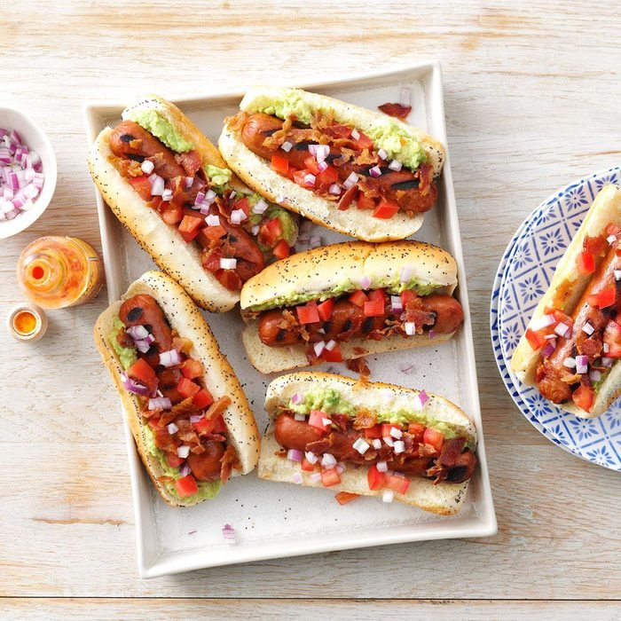

Easy And Quick Breakfast Sandwiches

Easy to make hotdogs
- 1/2 medium ripe avocado, peeled
- 1 tablespoon lime juice
- 1/4 teaspoon salt
- 1/8 teaspoon pepper
- 6 hotdogs
- 6 hotdog buns, split
- 1 small tomato, chopped
- 3 tablespoons finely chopped red onion
- 3 beef bacon strips, cooked and crumbled
- In a small bowl, mash avocado with a fork, stirring in lime juice, salt and pepper.
- Grill hot dogs, covered, over medium heat until heated through, 7-9 minutes, turning occasionally
- Serve in buns. Top with avocado mixture, tomato, onion and beef bacon
Home Page